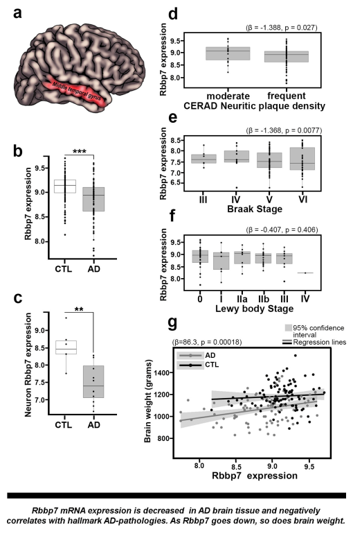
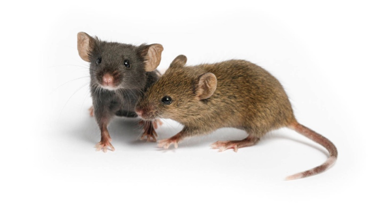
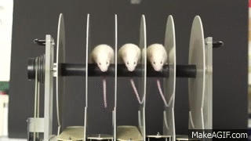
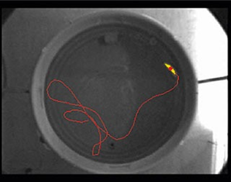

Research
The VLoND Uses a Variety of Model Symptoms, which Include:
Post-mortem brain tissue from patients with Down syndrome (DS), Alzheimer’s disease (AD) and aged-matched controls
Example of data derived from post-mortem brain tissue to identify novel therapeutic targets
The VLoND is heavily focused on using transgenic mouse models of neurodegenerative disorders.
Mouse Models Used in Our Lab
- PS19 (P301s mutation) – tau pathology
- 3xTg-AD (PS1, APP, and MAPT mutations) – Amyloid-ß and tau pathology
- APPswe/PS1dE9 (APP and PS1 mutations) – Aß pathology
- Ts65Dn (Down syndrome model) – basal forebrain cholinergic neuron loss and neurogenesis deficits
Behavioral assessment in mice
We specialize in a wide variety of behavioral assessment tools to assess cognition and motor function in our mouse models
The Rotarod - motor coordination and endurance assessment
The Morris Water Maze - hippocampal dependent spatial reference learning and memory
Click to learn more about the Morris Water Maze
The Fully Automated IntelliCage System - The IntelliCage circumvents issues of traditional behavioral tests, such as reducing human handling and stress and standardizing experiment protocols. Animals engage in behavioral tasks, using access to water as their incentive to participate. Each IntelliCage fits up to 16 mice per cage, which are each identified via a radiofrequency Identifier. Each cage contains four corners, which have LEDs, and two nose ports with motorized doors that provide access to water. Programming access to the water allows animals to be tested on a series of behavioral domains.

Click to learn more about the Intellicage
Genetic Modulation of Novel Therapeutic Targets with Adeno-Associated Viruses (AAV)
The VLoND has the ability to develop a variety of AAV serotypes to specifically modulate key targets to assess mechanistic links in vivo.